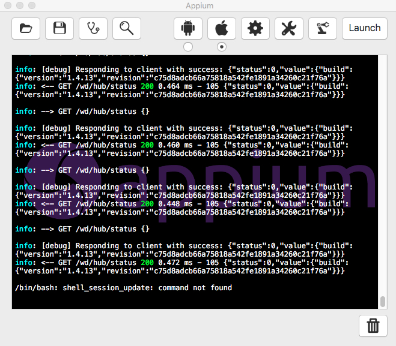
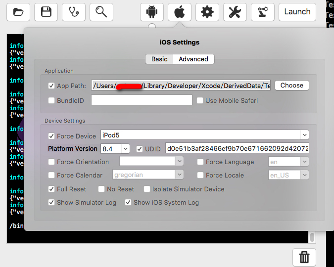
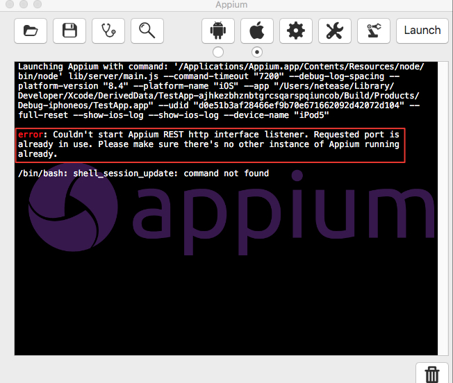
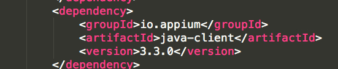
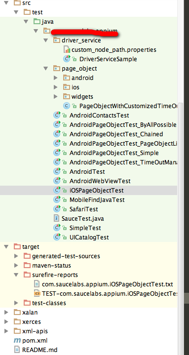
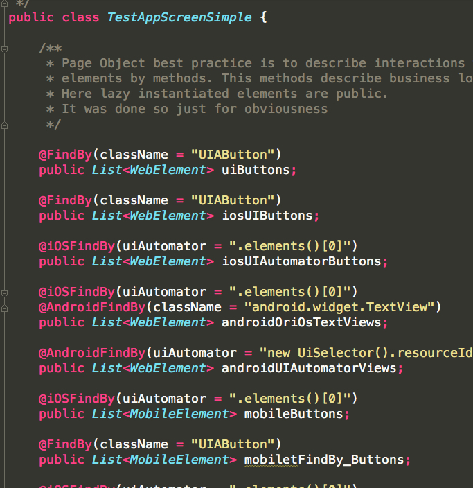
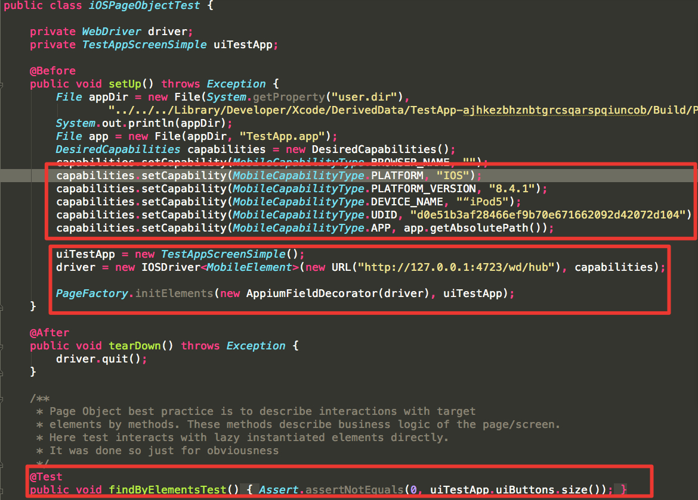
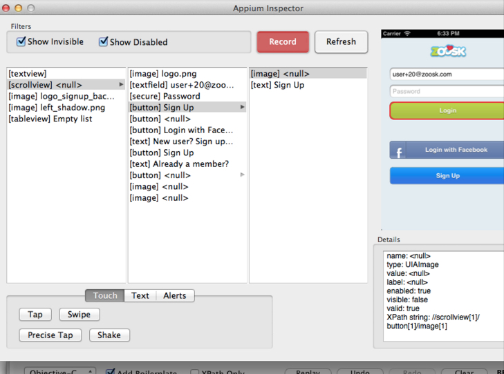

安装
有两种方式。
第一种方式：
通过npm，你必定需要在一台OS X系统上，亲。所以Homebrew先要有。
|
|
版本号如图：
|
|
tips：这里NPM的安装可以使用taboo提供的国内镜像。
具体参考：
npm taobao
或者安装成taboo的CNPM。其本质就是APM加了参数
|
|
比如：
|
|
appium运行后会出现下面的截图：
|
|
这里需要说明的是IOS9.2 xcode7以上的版本，只有appium1.5.0才支持，而现在在2015.02.26刚release。可见自动化工具要在IOS版本之后很久才能支持。
第二种方式：
直接下载appium.img包，安装成一个界面应用。如图所示

不难看出这里的支持安卓和IOS两种。
以IOS为例，这里的配置项和我们通过代码的方式是一样。代码在下面不要急。

需要注意的是这里通过Launch启动不能和之前通过命令行启动一起使用，否则会出现：

提示端口占用。
测试
那么server起来之后就可以写测试脚本了。现在介绍一下appium。它分为server和client。
server: Appium 服务端定义了官方协议的扩展，为Appium用户提供了方便的接口来执行各种设备动作，例如在测试过程中安装/卸载app。所以只要启动server如上面所述即可。
client是对selenium的简单扩展。所以selenium支持的开发语言，appium都支持：
| 语言 | url |
|---|---|
| Ruby | https://github.com/appium/ruby_lib |
| Python | https://github.com/appium/python-client |
| Java | https://github.com/appium/java-client |
| JavaScript (Node.js) | https://github.com/admc/wd |
| Objective C | https://github.com/appium/selenium-objective-c |
| PHP | https://github.com/appium/php-client |
| C# (.NET) | https://github.com/appium/appium-dotnet-driver |
| RobotFramework | https://github.com/jollychang/robotframework-appiumlibrary |
这里我们用JAVA。通过pom来引入java-client，嗯，maven都很熟，不是重点。

其实所谓的client就是你的测试脚本。
仍然秉承selenium web UI的测试思路，测试数据、ui控件描述和测试逻辑三者之间的独立。
自然而然，使用成功实践的项目组织结构如下，当然具体工具还是熟悉的TestNG + Maven：

其中page_object 文件夹，是每个页面的元素的获取的类

测试类：IOSPageObjecttest是测试执行

- 第一个红框里的都是需要定义的，从字面也可以理解
app的路径就是通过xcode来生成的路径。这个就是被测对象。
需要定义Platform，Platform version（IOS的版本号），DEVICE_NAME(通过Xcode的devices可以查看)，UDID（通过xcode的devices查看）。模拟器测试可以忽略UDID这个选项。但是对于真机调试是必须的
选项。后续将如果进行真机调试 - 第二个红框是初始化测试的Page，也就是页面元素获取，实例化图一。然后使用类似于selenium web driver的方式，初始化一个driver，然后绑定pagefactory
- 第三个红框就是具体的测试用例。
本例使用的是Junit，所以有setup tearDown操作。TestNG类似，可以使用@Beforetest这样的annotation来做到。
用例运行，这个就是maven的操作了：
全集执行或者单个用例执行：:
|
|
真机调试
上面的所以工作在进行IOS simulator测试并不会出现很多问题。但是真机调试的问题就来了。IOS的生态系统比较严谨，证书很多。如果你所测试的设备没有在某个开发者账户下，那么就不会签名认证，就不会生成app。
你需要：
- 描述文件（Provisioning Profiles）
- 开发者证书(os_development.cer，或者已经到处的p12文件)
所有都搞定了。这里你慢慢找吧，你需要一天时间。
就可以通过前面介绍的两种方式的任意一种，使用appium的GUI（appium-dot-app）或者命令行来执行case。
appium inspector
其本质是定位元素：

类似于Chrome developer tools，无需过多介绍。
通过这个网站 xpathtester
将view hierarchy的xml文件load进来后，可以简化path的获取。
就这些吧，自己玩。IOS及OS X是另外一个生态系统，慢慢玩起。